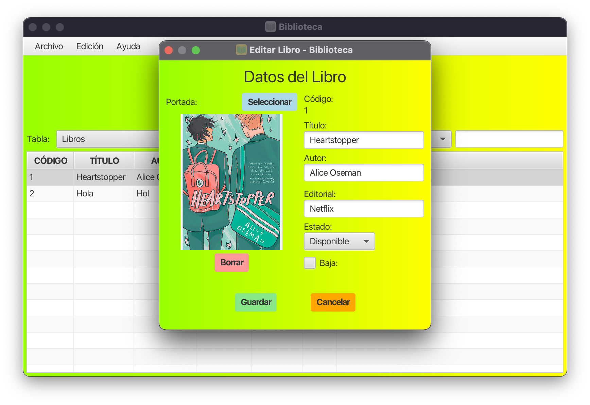

Gestión de Libros
Información General del Libro
En la parte superior de la ventana, verá un título que indica "Gestión de Libros" o similar.
Portada del Libro
- Imagen de portada: Muestra la imagen actual del libro. Por defecto, se muestra una imagen genérica.
- Botón de selección: Permite seleccionar una nueva imagen desde su dispositivo.
- Botón de eliminación: Permite eliminar la imagen actual (deshabilitado si no hay una imagen personalizada).
Detalles del Libro
- Código: Muestra el código único del libro (no editable).
- Título: Campo para ingresar el título del libro.
- Autor: Campo para ingresar el nombre del autor.
- Editorial: Campo para ingresar el nombre de la editorial.
- Estado: Menú desplegable para seleccionar el estado actual del libro.
- Dado de baja: Casilla para indicar si el libro ha sido retirado del catálogo activo (tooltip disponible).
Acciones
- Guardar: Guarda los cambios realizados en la información del libro.
- Cancelar: Cierra la ventana sin guardar los cambios.
Consejos de Uso
- Asegúrese de completar todos los campos obligatorios antes de guardar.
- Añada una portada personalizada utilizando la función correspondiente.
- Puedes descartar cambios no deseados con el botón "Cancelar".
- Mantenga actualizado el estado del libro para gestionar eficientemente el inventario.
